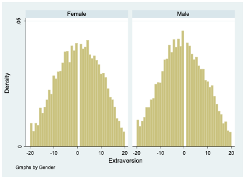

4 Regression with Qualitative Independent Variables
Let’s say I’m interested in studying how personality relates to gender. The most common personality measure in psychology is called the “Big Five” personality inventory. There is a standard set of 50 survey items that researchers can use to measure five aspects of personality. ?fig-Big5 is an example of some of these questions and how they are formatted:
For now, I decide to focus on whether people are introverted or extroverted. Extroverts are outgoing and tend to enjoy interacting with others. Extroverts will tend to agree with the statement “I am the life of the party” while introverts will tend to agree with the item “I don’t talk a lot.”
I find a dataset that contains lots of responses to the Big Five personality questions as well as information on the gender of each respondent.1 There are 10 different questions related to extroversion, and the dataset has one variable (column of data) for each of these 10 questions. The column labeled e1 shows responses to the item “I am the life of the party.” A value of 1 means the respondent disagrees with this statement, while a 3 indicates neutral, and a 5 means they disagree.
For all of the odd-numbered extroversion questions (e1, e3, e5, etc.), agreement indicates extroversion. For the even-numbered items (e2, e4, e6, etc.), agreement indicates introversion. To create a single extroversion variable that combines responses from all 10 survey items, I create a tally, adding up all the values for odd-numbered questions and then subtracting the responses to the even-numbered questions. An extreme extrovert will have a 5 for all the odd-numbered questions and a 1 for all of the even-numbered ones, giving them a score of 20 (5x5-5x1=20). An extreme introvert will have a -20 since they will answer 1 to all the odd-numbered questions and 5 to all the even-numbered ones (5x1-5x5=-20).
Most people lie somewhere in the middle between introversion and extroversion:

Our gender variable was measured by asking respondents “What is your gender?” and they could choose from male, female, or other. In a moment, we’ll consider those who responded “other,” but for now, let’s just look at those who chose either male or female.
4.1 Predicting extraversion using gender
If I want to describe differences in extraversion by gender in this dataset, I can compute the mean value of extraversion for males and for females. It turns out that males have an average extraversion of -0.46 while females’ average level of extraversion is 0.53. Thus, the average female is about 1-point more extraverted than the average male. But of course, there is lots of variation in extraversion among both groups:

There are plenty of females who are introverts and plenty of males who are extroverts.
If you asked me to guess the extroversion level of someone and the only thing you told me about them was their gender, my best bet would probably be to guess the average extroversion level for someone of that gender. So for a female I knew nothing else about, I would guess their extroversion to be 0.53, while for a male I’d guess -0.46.
Social scientists use the dependent variable to describe the variable they’re making a prediction about and independent variable to describe the variables that help them make that prediction. So in this example, extraversion is my dependent variable and gender is my independent variable.
When we’re working with data, sometimes it’s helpful to express how I would make a guess about a dependent variable (extraversion) based on other factors (gender) using a mathematical formula. In fact, this is exactly what we do when we run a regression. There are many ways I could write this formula, but I’ll show just two for now. First, I could write:
\[ \widehat{Extraversion}=0.53×Female-0.46×Male \tag{4.1}\]
Notice I’ve added a “hat” above the name of the variable Extraversion; this hat means that I’m making a guess about the value of that variable (I’m guessing the level of extraversion based on gender). The equation has two other variables Female and Male, and these two variables will take on a value of 1 if the person’s gender is equal to the name of the variable and will otherwise take on a value of 0. For a female, Female will equal 1 and Male will equal 0, giving us:
\[ \widehat{Extraversion}=0.53×(1)-0.46×(0)=0.53 \]
So our guess for the level of extroversion (\(\widehat{Extraversion}\)) of a female we know nothing about is 0.53.
For a male, our guess is:
\[ \widehat{Extraversion}=0.53×(0)-0.46×(1)=-0.46 \]
There’s a second way I can write my formula, which will turn out to be more useful in the future when we come to consider multiple factors at the same time that might help us predict the value of a dependent variable. Rather than having two variables to represent gender in my equation, I can just use one:
\[ \widehat{Extraversion}=0.53-0.99×Male \tag{4.2}\]
In Equation 4.2, we start from female as our baseline. Notice that the first number we see (0.53) is our guess for the value of extraversion for a female. When we’re considering a female, Male=0, so:
\[ \widehat{Extraversion}=0.53-0.99×0=0.53 \]
Thus, we get the right prediction for females from this equation, even though we didn’t include a variable specifically for females. If we have a male, Male=1, so we get:
\[ \widehat{Extraversion}=0.53-0.99×1=-0.46 \]
This is the same prediction we got before. Remember, I decided to initially just analyze respondents who selected either male or female. Since we are only considering two categories (male or female), and each respondent is either a male or a female, saying Male = 1 lets me know that Female = 0. It’s actually repetitive in this context to both say that Male = 1 and Female = 0. Similarly, saying Male = 0 implies that Female = 1. So I can simplify my equation by just including one variable to indicate binary gender.
Notice that in Equation 4.2, the number next to Male is equal to the difference between the average level of extraversion for females and the average level for males (0.53-(-0.46)=0.99). This is because Equation 4.2 starts with females as the baseline, so to get our prediction for males, we have to adjust our baseline prediction by the average difference for males.
Equation 4.2 is also typically how we will arrange our equation when we’re running a regression.
4.2 Prediction with more than two categories for gender
I now move beyond the gender binary and consider the “other” category in survey responses. I’ll refer to this other category as “non-binary” gender. The average level of extraversion among those with non-binary gender is -5.66. So non-binary people tend to be quite a bit more introverted than those who identify as male or female. As with males and females, there is considerable variation among non-binary people:

The number of non-binary respondents is relatively small (102), so it’s not terrible surprising that this histogram looks a bit choppier than the ones we saw before.
Again, if we had to make a guess about the level of extraversion of someone, and all we knew about that person was that their gender was non-binary, we would probably want to guess the mean value among non-binary respondents (-5.66). Modifying Equation 4.1 to incorporate a third category is relatively straightforward:
\[ \widehat{Extraversion}=0.53×Female-0.46×Male-5.69×Other \tag{4.3}\]
For someone who identifies as female, we would plug in Female = 1, Male = 0, and Other = 0:
\[ \widehat{Extraversion}=0.53×(1)-0.46×(0)-5.66×(0)=0.53 \]
If someone identifies as non-binary, we would use Female = 0, Male = 0, and Other = 1:
\[ \widehat{Extraversion}=0.53×(0)-0.46×(0)-5.66×(1)=-5.66 \]
We can also return to the format of Equation 4.2 but modify it to include the other category. This is how we will typically write our equation if we are doing a regression:
\[ \widehat{Extraversion}=0.53-0.99×Male-6.19×Other \tag{4.4}\]
Now that there are three possible values for gender (female, male, and other), knowing the value of Male doesn’t necessarily allow us to conclude what the vale of female is. If , the individual could identify as either female or non-binary. So we have to include a second variable. In this case, we chose to include the variable Other. If we know the values of Male and Other, we can always figure out the value of Female by process of elimination.
For a non-binary person, we plug in Male = 0, and Other = 1:
\[ \widehat{Extraversion}=0.53-0.99×(0)-6.19×(1)=-5.66 \]
When considering a female, we use Male = 0, and Other = 0:
\[ \widehat{Extraversion}=0.53-0.99×(0)-6.19×(0)=0.53 \]
Equation 4.3 and Equation 4.4 communicate an equivalent method of making a prediction about extraversion based on gender; they just offer this information in two different formats. Equation 4.4 might be a bit trickier to understand for now, but it will become very useful in the future.
Notice that we can talk about gender either as one qualitative variable with three possible values (female, male, or other), or we can talk about it as a series of three dummy variables (Female, Male, and Other) that can take each on a value of either 0 or 1. This can make things a bit confusing, but the important thing to remember is that when we have a qualitative variable with more than two categories, we’ll need to break out the categories into a set of dummy variables for purposes of representing the qualitative variable in an equation.
However, as Equation 4.2 and Equation 4.4 illustrate, we don’t necessarily need a dummy variable for every single category. Specifically, whenever we want to create an equation with a qualitative independent variable in a format like Equation 4.2 or Equation 4.4, the number of dummy variables should be equal to the number of categories minus one. Since our gender variable can take on three possible values in this example, we included two independent variables in Equation 4.4. No dummy variable is included for female, so we call female the omitted category or the baseline category. Remember, the first number in Equation 4.4 is 0.53, which represents our guess for females—the baseline category. If we instead had a qualitative variable with five categories, we would include four dummy variables in our equation.
https://openpsychometrics.org/_rawdata/ (the file I used is called “BIG5.zip”)↩︎